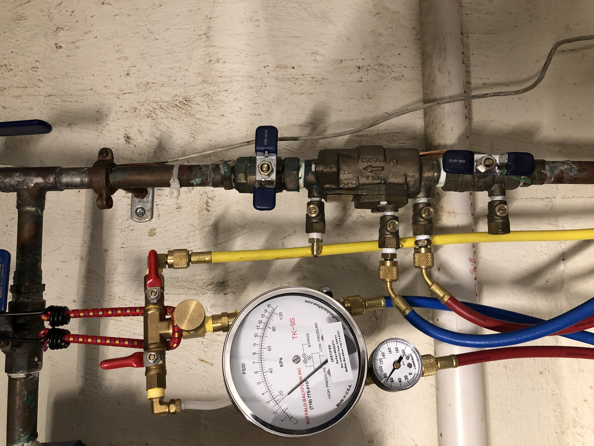

Providing Excellent Service to
All Homeowners of Nassau County
Automatic Reminders
To ensure you do not miss the submission deadline, you will receive email and text reminders prior to your inspection due date. Additionally, electronic records will be available in case you misplace your copy.
Budget Friendly
Offering affordable pricing to all customers of Nassau County, Long Island. Receive $10 off your first backflow preventer test!
Expertise with Leading Backflow Management Systems
Eperienced in working with industry-leading backflow management systems, including BSI, Track My Backflow, and VEPO Crossconnex. Your paperwork is reviewed and filed with the right water department.
Services

Backflow Preventer Testing
Annual backflow testing is required in Nassau County, Long Island, NY, to safeguard the quality of drinking water. As a certified New York State backflow tester, I provide thorough testing of your device to ensure compliance with county regulations. I will handle all necessary documentation and promptly submit it to the county on your behalf. Your test records will also be securely maintained, and I’ll gladly provide copies at any time for your convenience or future reference.
Landscaping and More
We have partnered with Cherry Valley Landscaping, they are Nassau County lawn care experts for over 30 years. Family-owned business providing exceptional service for residential & commercial properties. Services include Lawn Care, Tree Trimming, Power Washing, Spring and Fall Cleanup. Click here to learn more!
Sprinkler Installation & Repair Service
A broken sprinkler system can cause a lot of damage and turn out expensive. Not giving proper maintenance to a sprinkler system ruin your landscake, leak over time and increase your water bill. I've partnered with knowledgable individuals that specialize in sprinkler systems and are able to deliver quality services. Call Roberto for sprinkler inqueries (516) 451-7816. Click here to learn more!
Spring Turn on & Fall Winterization
Your sprinkler system is a complex system not to be messed with. Turning on your sprinkler system is not simply allowing the water to flow, this should include checking for leaks, ensuring that your backflow device is not damaged and delivery of adequate water to your lawn. Also, Proper winterization by a professional is recommended in the fall to blow out all the remaining water in the system. Click here to learn more!
New Customers Save $10 When Scheduling an Appointment
Have any questions? Visit my FAQ page

Residential Testing
It's very important that house owners take serious responsibility in ensuring that their potable water is safe to use. Performing a backflow test on a yearly basis will bring peace of mind knowing that the water beign consumed is safe from contaminants that may harm your family.
More about Backflow Testing
As a home or business owner, you may not be aware of backflow prevention procedures. Click here, to learn more about backflow, and how to prevent it.

Commercial Testing
Businesses that recently installed a backflow device or already contain a backflow device are responsible to have their device tested by a certified NYS backflow tester like me.

Testing Done Right
Safeguarding the public water system is an essential part of my mission to protect public health. By utilizing the most up-to-date techniques and equipment to perform backflow prevention tests. With knowledge on how to use online systems like BSI, Trackmybackflow and VEPO, you can rest assure that your tests are well handled.